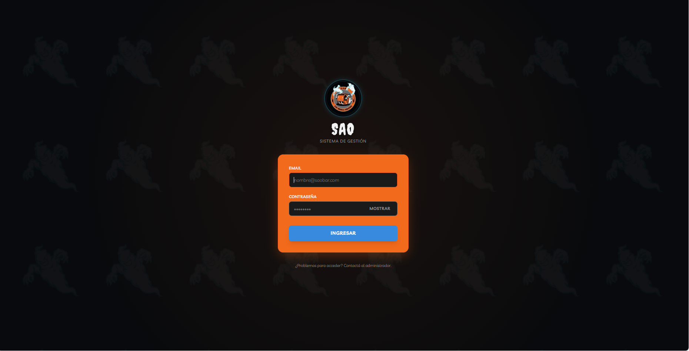
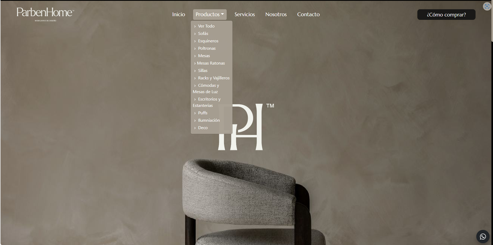
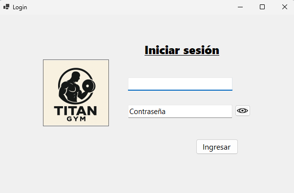

AI-Driven Developer
Lucas Luccaroni
Desarrollador Full Stack
AI-Driven Developer con foco en sistemas tradicionales e inteligencia artificial aplicada. Experiencia en desarrollo agéntico y co-creación Humano-IA. Desarrollo soluciones a medida, adaptando stack y arquitectura a lo que cada proyecto necesita.

Habilidades y Tecnologías
Herramientas y lenguajes que utilizo para construir soluciones eficientes.
Backend
Bases de Datos
IA Aplicada y Desarrollo Agéntico
Proyectos Destacados
Selección de sistemas desarrollados que reflejan mi experiencia práctica.

Proyecto Estrella • Full Stack + IA
SAO Bar — Sistema de Gestión Web con Asistente IA
Sistema de gestión integral para gastronomía con asistente de inteligencia artificial incorporado. Incluye módulos de ABM de productos, comandas, caja diaria, cierres, reportes e historial. Integra un asistente IA con arquitectura RAG y Tool Use (LangGraph, Ollama, FAISS y Nomic Embed) para consultas avanzadas de operaciones y costos.
Next.js
TypeScript
Tailwind CSS
Supabase
RAG / IA

Sitio Web Freelance
Parben Home — Diseño de Interiores
Sitio web comercial responsive para marca de diseño de interiores. Desarrollo en React con Vite para máxima velocidad de carga, e integración con Firebase para gestión de base de datos y sistema automático de mailing de consultas.
React
Vite
JavaScript
Firebase

Aplicación de Escritorio
Sistema de Gestión para Gimnasio
Software de escritorio orientado a la administración integral de un centro deportivo. Desarrollado en C# .NET Framework con arquitectura en capas y persistencia en MySQL. Permite la gestión de socios, cuotas, abonados y control de disciplinas.
C#
.NET
MySQL
Contacto
¿Tenés una propuesta o proyecto en mente? Escribime un mensaje.
O si preferís correo directo: luccaroni@gmail.com